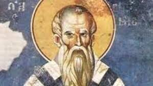
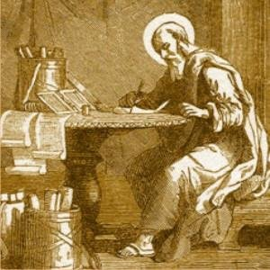
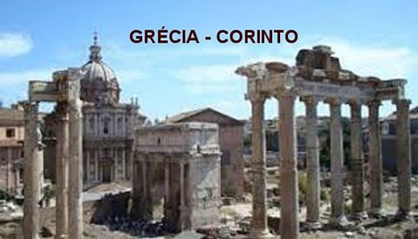
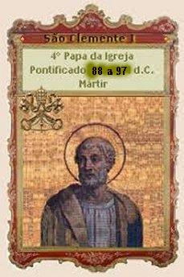

“PRECIOSO
BALUARTE
CRISTÃO”
PRELÚDIO
Pouco se sabe sobre os primeiros
bispos de Roma, porque as informações e textos da época são escassos e em
determinados casos, são praticamente inexistentes. Sobre Clemente Romano
a melhor fonte é através de Santo Irineu, que foi Bispo de Lyon, na França, até o
ano 202. Ele afirma que Clemente
“tinha visto os Apóstolos",“tinha se encontrado com eles”
, e
“ainda tinha nos ouvidos a sua pregação e diante dos olhos a sua tradição”.
(Adversus Haereses L III, c.3, n.3)(Contra as Heresias).
Existem também uns poucos textos do século
IV e do século VI, que falam de São Clemente como um mártir. Na verdade, São Clemente
foi eleito Papa numa época bastante difícil para a Igreja Católica, cheia de
perseguições contra os seguidores de JESUS CRISTO.
FAMÍLIA E RELACIONAMENTO
Clemente nasceu em Roma,
de família hebraica, na região do Monte Célio, por volta do ano 30. A tradição
cristã acrescenta que na época, seu pai era um Senador Romano chamado Faustino,
da família Flávia, e que tinha parentesco com o Imperador Romano Domiciano. De
acordo com Origines (ano 254), Eusébio (ano 340) e Jerônimo (ano 420), Clemente
foi um dos colaboradores de São Felipe Neri, e foi Discípulo de São Paulo em
Filipos. E tanta amizade e consideração São Paulo tinha por ele, que na Epístola
que escreveu aos Filipenses cita o nome de Clemente:
"Rogo também
a ti, Sízigo, fiel “companheiro”, que lhes prestes auxílio, porque me ajudaram na
luta pelo Evangelho, em companhia de Clemente e dos demais auxiliadores meus, cujos
nomes estão no Livro da Vida.”(Fl 4,3)
Era uma família
cristã, que embora parente do Imperador, se mantinha distante das reuniões
festivas de Domiciano. Clemente foi um dos primeiros a receber o Santo
Batismo diretamente pelas mãos do Apóstolo São Pedro.
Cresceu e estudou em Roma, revelando-se pessoalmente um homem possuidor de um
espírito minucioso com um raciocínio muito rápido, embora possuísse índole
tranquila e observadora. Sobretudo, era um forte e destemido defensor das
verdades cristãs. Vivia no meio dos cristãos e ouviu pregações e ensinamentos de
diversos Apóstolos de JESUS. Foi discípulo de São Pedro com quem apreendeu as
verdades cristãs e com quem, em diversas oportunidades, também se emocionou,
quando o Apóstolo Pedro concluído os ensinamentos, em dias mais tranquilos lhe
descrevia fatos e acontecimentos da vida de NOSSO SENHOR. É fácil imaginar, que
eram momentos inesquecíveis, os quais o levavam a permanecer minutos em completo
silêncio e cabisbaixo, com o coração envolvido por uma profunda e amorosa
simpatia por NOSSO SENHOR.
FEITO PRESBÍTERO
E MAIS TARDE BISPO
Clemente vivendo nos meios
cristãos, se revelava um homem culto, valoroso e brilhante, simples e modesto, e
também extremamente preocupado com a justiça e o direito do povo, principalmente
daquelas pessoas menos favorecidas. Assim em face das suas reconhecidas
qualidades e avançado conhecimento cristão, foi feito Sacerdote por São Pedro e
posteriormente Bispo. Oportunidade em que pode atuar decisivamente expandindo o
cristianismo e ajudando com mais frequência o povo necessitado.
Durante a
estadia de São Pedro no Oriente Médio, onde participou do Primeiro Concílio
Ecumênico da Cristandade (anos 48/49), São Pedro confiou o Governo da Igreja aos
três futuros Bispos de Roma: Lino, Anacleto e Clemente.
Em Roma,
Clemente participava ativamente das atividades das Igrejas, seja na Catequese ou
na orientação administrativa em diversas Comunidades cristãs na cidade e na
periferia, também catequizando e fazendo com que JESUS fosse mais conhecido
pelos fiéis. Ele se preocupava entristecido e admirado, quando observava o povo
fanático tratando o Imperador Romano como se fosse um “deus”.
Inclusive presenciou em varias ocasiões, grupos de homens e mulheres numa Praça,
onde havia uma estátua do Imperador, cantando fervorosamente, louvando e
incensando a imagem do Imperador César.

ELEITO PAPA
A piedade e o seu exemplo de
vida e fé causavam admiração e cativava corações. Ele até converteu uma das
irmãs do Imperador Domiciano chamada Domitila. Por isso mesmo,
a conversão de Domitila ajudou bastante na suavização da sangrenta perseguição
que acontecia no Império Romano contra os cristãos, enquanto Domiciano imperava.
Com o falecimento de São Pedro no
ano 67, o Bispo Lino foi escolhido pelos religiosos e assumiu a Cátedra cristã
(ano 67 a 76). Com o falecimento do Papa Lino no ano 76, o Governo da Igreja
Católica passou a ser dirigido pelo Bispo Anacleto (ano 76 a 88). No ano 88 o
Papa Anacleto faleceu, e Clemente Romano foi escolhido Sumo Pontífice da Igreja
Católica, governando-a desde o ano 88 até o ano 97.
DESEMPENHO COMO SUMO
PONTÍFICE
Sua atuação no comando do
Cristianismo foi proveitosa e eficiente, pois sempre se mantinha ligado nas
necessidades do povo e preocupado em buscar caminhos de santidade para os fiéis.
Clemente se esmerava fervorosamente em pregar o Evangelho com firmeza, a fim de
que fosse bem entendido pelas pessoas, e primordialmente centrava na necessidade
de fidelidade absoluta à doutrina de NOSSO SENHOR JESUS CRISTO. Enfrentou com
inteligência e sabedoria as divisões internas na Igreja e soube controlá-las com
dignidade. Restabeleceu a Crisma de acordo com o rito de Pedro, que foi o primeiro
Papa e seu mestre. Implantou na tradição religiosa o uso da palavra “Amém”
(que significa creio, estou de acordo, assim seja, confirmo) nas orações e nas
celebrações. Também lhe é atribuída à introdução das Vestes Sagradas na Liturgia.
No ano 95, atuando como Sumo Pontífice dos Cristãos, no mês de Dezembro criou 10
Sacerdotes, 02 Diáconos, e 15 Bispos, que foram enviados a diversos locais. No mapa,
dividiu a cidade de Roma em Sete Regiões, comandada por sete Notários (Escreventes),
com a responsabilidade de cada um pesquisar e colecionar anotações corretas, com
todos os fatos e Atos acontecidos na área de cada um, principalmente aqueles que
envolviam Mártires Cristãos.
O cristianismo, sob sua direção,
aumentou muito. Foi o Papa Clemente I quem enviou São Dionísio, o primeiro Bispo
de Atenas, para a Gália, para ser o primeiro Bispo de Paris, com seus ilustres
companheiros, levando aos franceses a luz da verdadeira fé.
Em Roma, ele deu o véu das
virgens para Santa Domitila Flavia e fez o Batismo de Sisine, um dos primeiros
da cidade, que veio por curiosidade somente para examinar as assembléias dos
cristãos. Mas surgiu um problema nos seus olhos, que lhe tirou completamente a
visão, a qual foi recuperada pelas orações do Santo Pontífice Clemente I.
Agradecidos a DEUS, Sisine com sua esposa Teodora, foram muito zelosos e
com disposição ajudaram na propagação do Evangelho.
São Clemente
Romano foi um grande defensor da autoridade do Sumo Pontífice e da Igreja de
Roma, afirmando que verdadeiramente a Igreja e o Papa, são os detentores das
revelações divinas, possuindo a autoridade necessária para comandar os cristãos.
A PROBLEMÁTICA
COMUNIDADE DE CORINTO

Naquela época
a Comunidade Cristã de Corinto na Grécia, não trilhava o mesmo caminho pacífico e
ordeiro dos cristãos, havendo confusões e mal-estar dentro da própria
Comunidade. Havia entre os cristãos um grupo mais jovem que se rebelou contra os
Presbíteros (Sacerdotes mais idosos e o Bispo) criticando os superiores
hierárquicos e não respeitando as suas determinações, criando um indesejável
ambiente. E assim procedendo e seguindo por este caminho odioso, decidiram
afastá-los dos seus postos (os Padres idosos e o Bispo, se lá existisse),
substituindo-os por Presbíteros jovens, como diziam “cheios de vida”,
para assumirem os comandos da Igreja.
O Papa Clemente I
não concordando com aquela situação se empenhou em re-colocar as autoridades nos
seus devidos lugares. E com este objetivo, escreveu-lhes uma longa e austera
missiva: “Carta
de Clemente aos Coríntios”.
Nesta carta
o Bispo de Roma começou lamentando as perseguições do Imperador Romano Domiciano
aos cristãos, que verdadeiramente era um fato lamentável, mas que felizmente cessou
temporariamente com a morte do Imperador. A carta tem data do ano 96 e nela, o
Papa Clemente I respondia a solicitação da Igreja de Corinto, pedindo a sua
intervenção para resolver um triste caso local, após o afastamento de
Presbíteros daquela Comunidade, devido a uma contestação levada a cabo por
jovens contestadores (provavelmente também Sacerdotes mais novos). Consta que
provavelmente Presbíteros mais jovens teriam usurpado as prerrogativas dos mais
velhos, inclusive estabelecendo normas referentes à ordem da hierarquia
eclesiástica (Bispos, Presbíteros, Diáconos). São Irineu explica que esta carta
do Papa, foi uma mensagem da Igreja de Roma à Igreja de Coríntio, com o objetivo
de “promover a reconciliação
e fazer existir a paz na Comunidade, renovando a fé e anunciando a Tradição que
há pouco tempo a Igreja recebeu dos Apóstolos”. Foi uma carta longa e minuciosa, e na qual, São Clemente
também retoma termos e orientações feitas por São Paulo, nas duas Cartas que
o Apóstolo escreveu aos Coríntios.
Respeitosamente e com
dignidade, o Papa Clemente I começa assim: “A igreja de DEUS que se reúne em Roma para a igreja de DEUS em Corinto,
aos que são chamados e santificados pela Vontade de DEUS, por meio de NOSSO SENHOR
JESUS CRISTO: Graça e paz a vocês do Altíssimo DEUS por meio de CRISTO, NOSSO
SENHOR.” – (1 Clemente 1.1)
O Papa, com
comparações sábias e inquestionáveis, pede para que os cristãos de Corinto
recebam os Presbíteros que acreditava terem sido expulsos de suas funções
injustamente dizendo: “Se
algum homem desobedecer às palavras que DEUS pronunciou através de nós,
saibam que esse tal terá cometido uma grave transgressão, e se terá posto em
grave perigo”.
E por isso mesmo, São Clemente incita aos Coríntios “a obedecer às coisas escritas por nós através do ESPÍRITO
SANTO”.
“Vamos olhar
fixamente para o Sangue de CRISTO, e ver como que o Sangue é precioso para DEUS, Sangue
que foi derramado para nossa Salvação, e estabeleceu a Graça do arrependimento diante
do mundo inteiro”.(1
Clemente 7.4)
“Todos
estes, o grande CRIADOR e SENHOR de todas as coisas, nomeou a existir em paz e
harmonia, enquanto ELE faz bem a todos, mas o mais abundante para nós, que
fugimos para o refúgio das suas misericórdias, através de JESUS CRISTO NOSSO
SENHOR, a quem seja dada glória e majestade para sempre e sempre. Amém”.
(1 Clemente 20.11-12)
Com tranquilidade,
em sua Carta aos Coríntios, ele revelou o seu espírito amoroso e preocupado com a
unidade da Igreja. Os Coríntios se recusavam a seguir as ordens emanadas da Igreja
de Roma e inclusive, na cabeça de alguns havia a intenção de se separarem de Roma.
Então a Carta de Clemente foi fundamental para restabelecer a unidade cristã e acabar
com as graves dissensões que ocorriam na Igreja de Corinto, unindo os cristãos
na única verdade deixada por NOSSO SENHOR JESUS CRISTO.
O Papa Clemente em
sua missiva considera que aqueles problemas ocorridos na Comunidade Cristã de Coríntio
se deviam à ausência de “duas
importantes virtudes cristãs: humildade e amor fraterno”. Então reforça e relembra os deveres e funções dos leigos e
dos Sacerdotes, distinguindo-os em linhas claras e evidentes, inclusive fazendo aparecer
pela primeira vez à palavra “leigo”
, que significa
“membro do povo de DEUS”.
O Papa explica sabiamente
que a Igreja era formada através do ESPÍRITO SANTO, que é o “único ESPÍRITO DE GRAÇA derramado sobre nós”. Além disso, aborda também na missiva, o tema da
“hierarquia da Igreja”
recapitulando a sua orientação. E assim,
mostrava em realce a separação entre as “hierarquia da Igreja”
e da “Comunidade dos leigos”.
As duas embora independentes devessem manter
uma proveitosa ligação. Ambos os
“organismos”, deviam exercer os seus
ministérios “segundo a vocação
recebida”. O Papa Clemente explicou
e aprofundou a doutrina da sucessão, considerando que o “PAI ETERNO enviou JESUS CRISTO, que por sua vez enviou os
Apóstolos. Depois, os Apóstolos enviaram os Primeiros Chefes das Comunidades, e
estabeleceram que eles fossem sucedidos por homens dignos”. O Papa esclarece assim, que a estrutura da Igreja não é uma
estrutura política, mas uma estrutura Sacramental. Defende ainda que a Igreja não seja
uma invenção dos Homens, mas sim, de DEUS.
aborda também na missiva, o tema da
“hierarquia da Igreja”
recapitulando a sua orientação. E assim,
mostrava em realce a separação entre as “hierarquia da Igreja”
e da “Comunidade dos leigos”.
As duas embora independentes devessem manter
uma proveitosa ligação. Ambos os
“organismos”, deviam exercer os seus
ministérios “segundo a vocação
recebida”. O Papa Clemente explicou
e aprofundou a doutrina da sucessão, considerando que o “PAI ETERNO enviou JESUS CRISTO, que por sua vez enviou os
Apóstolos. Depois, os Apóstolos enviaram os Primeiros Chefes das Comunidades, e
estabeleceram que eles fossem sucedidos por homens dignos”. O Papa esclarece assim, que a estrutura da Igreja não é uma
estrutura política, mas uma estrutura Sacramental. Defende ainda que a Igreja não seja
uma invenção dos Homens, mas sim, de DEUS.
“Os apóstolos pregaram
o evangelho a nós da parte do SENHOR JESUS CRISTO; JESUS CRISTO o fez da parte de DEUS.
Por isso, JESUS CRISTO foi enviado por DEUS, e os Apóstolos por CRISTO. Ambas as
designações, portanto, foram feitas ordenadamente, de acordo com a Vontade de DEUS.
Tendo recebido suas ordens, e sendo plenamente assegurado pela Ressurreição de NOSSO
SENHOR JESUS CRISTO, e estabelecidos na Palavra de DEUS, com toda segurança no
ESPÍRITO SANTO, eles saíram proclamando que o Reino de DEUS estava próximo. E
assim pregando em países e cidades eles viram os primeiros frutos do seu trabalho,
tendo primeiramente os provados pelo ESPÍRITO, para serem Bispos e Diáconos
daqueles que posteriormente viessem a crer. Mas isso não era nada novo, desde
que de fato muitos anos atrás estava escrito em relação aos Bispos e Diáconos”.
(1 Clemente 42.1-5)
“Em amor o SENHOR
deu a si mesmo por nós. Por conta do amor que ele nos deu à luz, JESUS CRISTO NOSSO
SENHOR deu seu Sangue por nós pela Vontade de DEUS; Sua Carne por nossa carne; Sua
Alma por nossas almas”.
(1 Clemente 49.6)
Também, na carta,
fervorosamente São Clemente agradeceu a DEUS pela Providência de Amor que, criou,
santificou e salvou o mundo. Ele explica e defendia que, do mesmo modo como CRISTO
foi pregado na Cruz, os cristãos deviam rezar pelos seus perseguidores, mesmo que
estes os perseguissem e quisessem crucificá-los. Defendia esta atitude, tendo
como base de argumentação a Ordem Cristológica. E assim, o Papa Clemente I
reconheceu, ainda, na sua oração a legitimidade das autoridades políticas
segundo a ordem estabelecida por DEUS. Considerava que DEUS é uma soberania para
além de César, porque a essência da soberania Divina não é terrestre, mas sim
“do Céu”.

E continuou argumentando com firmeza, para acordar aquela problemática
congregação cristã em Corinto, onde os
"Presbíteros" e o
"Bispo" (se existisse) tinham sido depostos. São Clemente clama pela restauração
dos que foram depostos e pelo arrependimento dos faltosos, lembrando-lhes com clareza e energia
os Mandamentos Divinos, visando manter a ordem e obediência à autoridade da Igreja
estabelecida pelos Doze Apóstolos
com a criação dos
"diáconos e bispos".
Desse modo o Bispo
de Roma abordou diversos aspectos importantes na sua carta, que muito embora em
alguns aspectos sejam intemporais, representam efetivamente a
“solicitude da Igreja de Roma”.
Os Presbíteros
são mencionados várias vezes, mas não são distinguidos dos Bispos. Não há
absolutamente nenhuma menção a um Bispo em Corinto, e as autoridades
eclesiásticas daquela cidade são sempre mencionadas no plural. O escritor R.
Sohm acha que não havia Bispo em Corinto quando Clemente escreveu. Michiels e
muitos outros escritores católicos também pensam assim, mas deixa a questão em
aberto. Todavia, é bem provável que um Bispo pode ter sido nomeado como
resultado da carta do Papa Clemente.
Esta Carta
é a única obra genuína de São Clemente que ainda existe. A história demonstra
claramente e continuamente, a autenticidade de sua autoria da mesma. E por
curiosidade, é o único e mais antigo documento cristão que não foi incluído
no Novo Testamento.
Alguns escritores
relatam uma Segunda Carta aos Coríntios e publicações diversas, como se fossem de
autoria dele. Mas efetivamente, a verdade atesta, que o único escrito de São
Clemente Romano que existe, é aquela Carta aos Coríntios. Com certeza, ele
escreveu diversos outros documentos e missivas, mas que infelizmente, ao longo
dos séculos foram destruídos pela avassaladora onda de destruição emanada dos
Imperadores Romanos e de outros inimigos do Cristianismo.

 PRÓXIMA PÁGINA
PRÓXIMA PÁGINA
RETORNA AO ÍNDICE